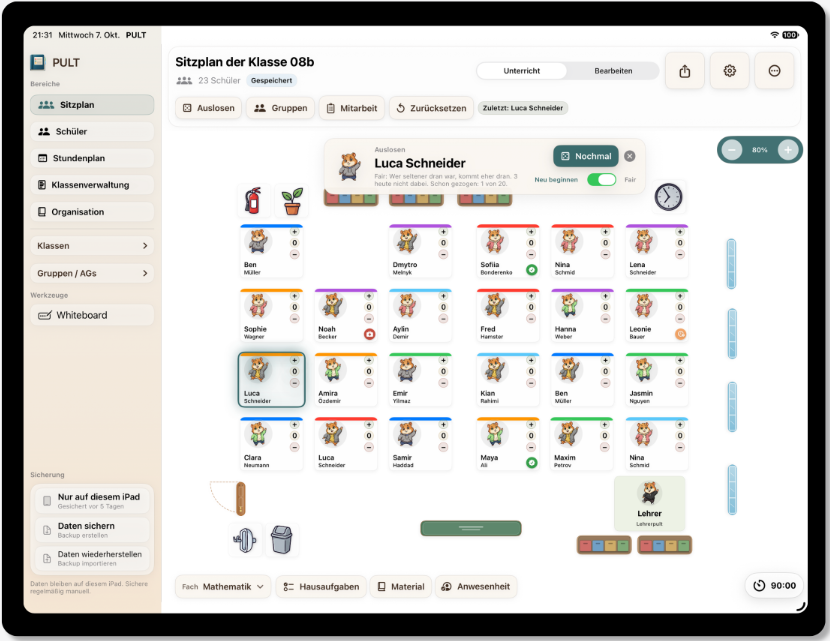
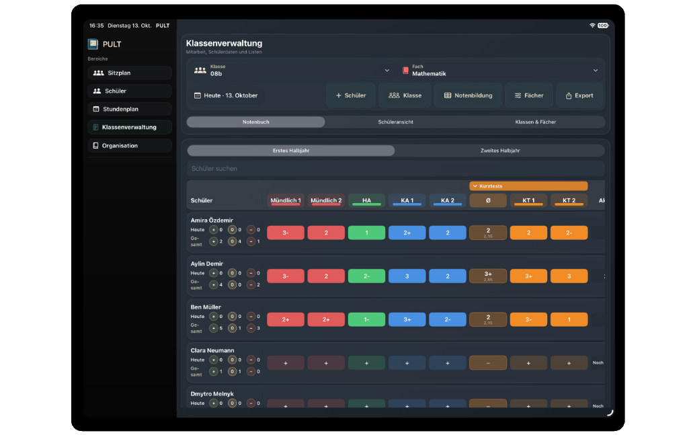
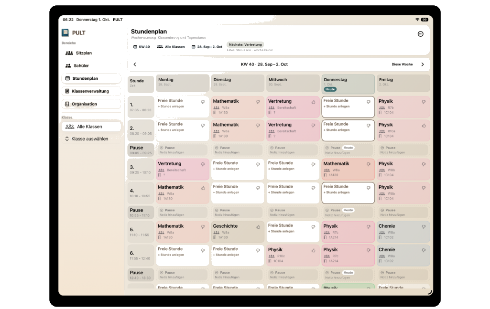
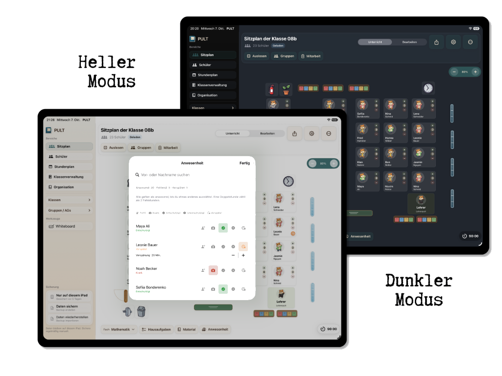

Für dich organisiert
Mitarbeit, Hausaufgaben, Material, Anwesenheit und Noten per Tipp erfasst, statt auf Zetteln gesammelt.
Verwalte Sitzplan, Gruppen, Timer, Mitarbeit, Aufgaben, Anwesenheit, Noten und Stundenplan an einem Ort. Zeig deiner Klasse am Beamer, was ansteht.
Eine Klasse kostenlos – dauerhaft.

Mitarbeit, Hausaufgaben, Material, Anwesenheit und Noten per Tipp erfasst, statt auf Zetteln gesammelt.
Sitzplan, Gruppen, Auslosung und Timer lassen sich projizieren, sodass deine Schülerinnen und Schüler direkt mitverfolgen können.
Du entscheidest selbst: Daten nur auf deinem iPad oder mit iCloud-Sicherung.

Für die Klasse
Weniger erklären, mehr unterrichten.
Zeig den Sitzplan am Beamer oder Display: Jede Schülerin und jeder Schüler findet sofort den eigenen Platz und die eigene Gruppe. Lose live aus, wer als Nächstes dran ist. Das ist fair und für alle nachvollziehbar. Der Timer läuft dabei sichtbar mit.

Für jede Arbeitsphase
Vergrößere den Timer und deine Klasse sieht auf einen Blick, was zu tun ist: Arbeitsauftrag, Sozialform (Einzel-, Partner- oder Gruppenarbeit), Extras wie „Musik hören erlaubt“ und die verbleibende Zeit. So entfallen Rückfragen, und alle wissen, worauf es ankommt.

Läuft dezent am Rand weiter, während du Noten einträgst oder die nächste Stunde vorbereitest.
Hier stellst du alles ein: Zeit, Arbeitsauftrag, Sozialform und Extras.
Für die Klasse gemacht: gut lesbar am Beamer, mit allem, was die Schülerinnen und Schüler wissen müssen.

Im Unterricht
Tippe im Sitzplan auf den Platz einer Schülerin oder eines Schülers: Mitarbeit mit Plus, Minus oder Null bewerten, vergessene Hausaufgaben oder fehlendes Material vermerken. Die Anwesenheit erfasst du in Sekunden – anwesend, fehlend oder verspätet. Alles landet automatisch beim richtigen Kind.

Bewerten
Trage schriftliche und mündliche Noten in einer übersichtlichen Tabelle ein. PULT berechnet die Durchschnitte nach deiner Gewichtung. So siehst du jederzeit, wo jede Schülerin, jeder Schüler und die ganze Klasse steht.

Planen
Dein Stundenplan zeigt dir jeden Tag, welche Klasse als Nächstes dran ist – inklusive Vertretungen und freier Stunden. Termine aus deinem Kalender erscheinen direkt im Stundenplan. Mit einem Tipp öffnest du die Stunde samt vorbereiteter Aufgaben und Tafelbild.

Visualisieren
Schreibe und zeichne mit dem Apple Pencil, und deine Klasse sieht am Beamer mit. Das freie Whiteboard ist sofort da für spontane Skizzen. Die Whiteboards im Stundenplan gehören fest zu einer Stunde. Du bereitest sie vor, entwickelst sie im Unterricht weiter und knüpfst beim nächsten Mal genau dort an. Der Timer läuft dabei sichtbar weiter.

PULT folgt dem hellen oder dunklen Modus deines iPads. Alle Funktionen bleiben gut lesbar, morgens im Klassenzimmer wie abends am Schreibtisch.
Du wählst selbst, ob deine Daten nur auf diesem iPad bleiben oder per iCloud gesichert werden. Datensicherung und Wiederherstellung sind direkt in der App eingebaut.
Starte mit einer Klasse – kostenlos und dauerhaft. Für weitere Klassen und Gruppen schaltest du die Vollversion mit einem einmaligen Kauf frei, ohne Abo.
Tipps zur Nutzung und Neuigkeiten zu PULT findest du auf Instagram unter @pult.app.